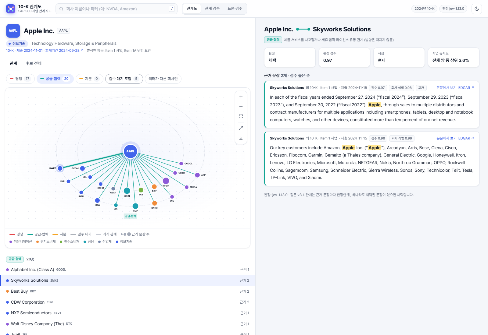
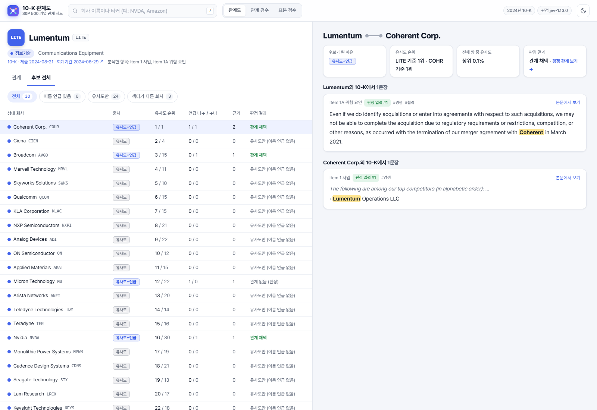
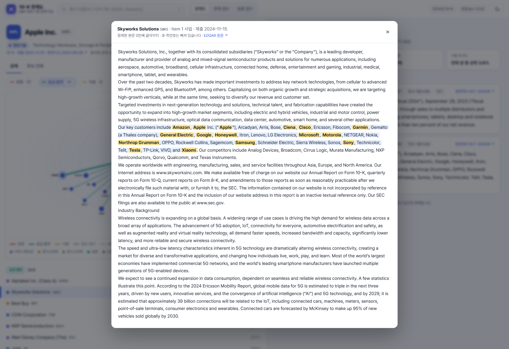

루멘텀과 비슷한 사업을 하는 기업은?
광통신 기업 루멘텀에 관심이 생겼다면 코히런트처럼 광통신 관련 사업을 하는 기업도 살펴보고 싶습니다. 하지만 넓은 산업분류 안에서 어느 기업이 비슷한 제품과 기술을 다루는지 다시 찾아야 합니다. 기업의 사업 설명을 직접 비교하면 이런 탐색에 도움이 됩니다.
10-K REPORT SIMILARITY · 기업 관계 지도
산업 분류 너머의 사업 구조를 포착
관심 기업이 생겼을 때, 같은 세부 사업을 하는 기업과 공급망으로 연결된 기업을 쉽게 찾고 싶어 시작했습니다. S&P 500 기업의 10-K를 분석해 사업이 유사한 기업을 찾고, 경쟁·공급·협력 관계를 공시 근거와 함께 확인하는 웹앱을 구축했습니다.

01 / PURPOSE
특정 테마나 기업이 시장의 관심을 받으면, 같은 흐름에서 수혜를 받을 만한 다른 기업을 찾게 됩니다. 이때 필요한 것은 넓은 업종 목록보다 구체적인 사업 내용과 거래 관계입니다.
광통신 기업 루멘텀에 관심이 생겼다면 코히런트처럼 광통신 관련 사업을 하는 기업도 살펴보고 싶습니다. 하지만 넓은 산업분류 안에서 어느 기업이 비슷한 제품과 기술을 다루는지 다시 찾아야 합니다. 기업의 사업 설명을 직접 비교하면 이런 탐색에 도움이 됩니다.
Apple의 신제품이 주목받으면 아이폰에 부품을 공급하는 기업에도 관심이 갑니다. IT 업종 목록만으로는 공급업체를 찾기 어렵고, Apple의 10-K에 그 회사 이름이 명시돼 있지 않을 수도 있습니다. 공급업체 쪽 공시까지 찾아 읽어야 연결이 드러나는 경우가 있습니다.
이런 기업을 찾을 때마다 여러 회사의 10-K를 일일이 읽는 수고를 줄이고 싶었습니다. 그래서 사업 설명이 유사한 기업을 찾는 기능과 여러 기업의 공시에서 경쟁·공급·협력 관계를 찾는 기능을 함께 구현했습니다. 관심 기업에서 출발해 살펴볼 종목을 넓히고, 관련성이 있다고 판단한 근거까지 확인할 수 있도록 만들었습니다.
02 / DESIGN
SEC EDGAR 10-K
Item 1·1A 추출·품질 검사
TF-IDF + 임베딩
공시의 회사 이름 언급
회사 식별·주변 문맥 확인
유형별 판정과 근거 저장
기업 관계 그래프
원문 조회·사람의 검수
사업 설명(Item 1)에 TF-IDF·SBERT·OpenAI 임베딩을 적용했습니다. 임베딩의 평균 벡터를 제거하고, 서로 다른 척도의 유사도를 기업쌍 백분위로 바꿔 결합했습니다. 사업이 비슷한 기업 상위 20곳과 공시에 직접 등장한 기업을 함께 후보로 구성했습니다.
여러 기업의 Item 1·1A에서 회사 이름과 앞뒤 문맥을 Jev 모델로 판정하고, 경쟁·공급·협력 등의 유형에 근거 문장을 연결했습니다. 관심 기업의 공시뿐 아니라 상대 기업의 공시에서 나온 언급도 함께 활용했습니다. 사업 설명의 유사도는 탐색 후보를 찾는 데 쓰고, 관계 유형은 공시 문장으로 확인했습니다. 회사 별칭과 분사 시점, 신용평가처럼 관계로 보지 않는 문맥도 처리했습니다.
판정 점수에 따라 채택·기각·검수 대상으로 구분하고, 사람이 근거를 읽고 판단을 기록하는 화면을 만들었습니다. 표본 검수에서는 모델 답을 가려 독립적으로 라벨을 붙이고, 개발 표본과 확인 표본을 나눠 경쟁·공급·협력 판정을 평가했습니다.
YAML 설정과 CLI로 수집·임베딩·판정·내보내기를 분리했습니다. 텍스트와 모델 입력별 캐시를 재사용하고, 관계 그래프와 검수 기록은 별도 데이터베이스에 저장해 그래프를 다시 생성해도 검수 결과가 보존되도록 했습니다.
03 / WEB APPLICATION
루멘텀에서는 유사 사업 후보를 살펴보고, Apple에서는 공급·협력 관계를 따라 상대 기업의 공시를 확인합니다. 아래 이미지는 실행 중인 앱에서 직접 캡처한 화면이며, 각 이미지를 누르면 원본 크기로 볼 수 있습니다.
선의 색은 관계 유형, 점의 색은 GICS 섹터를 나타냅니다. 경쟁·공급·협력 관계와 서로 다른 섹터의 연결을 골라 볼 수 있습니다.
관계별 근거, 판정 점수, 제출일을 함께 표시합니다. 회사명이 강조된 문장에서 앞뒤 본문과 EDGAR 원문으로 이동합니다.
모호한 관계를 사람이 확인하고, 판정과 메모를 저장합니다. 공시 근거가 달라진 관계는 다시 확인할 수 있도록 구분합니다.


Python · edgartools · TF-IDF · Sentence-BERT · OpenAI Embeddings · Jev · FastAPI · React · TypeScript · Cytoscape.js · SQLite
04 / RESEARCH USE
사업 설명이 비슷한 후보와 공시 근거가 있는 관계를 함께 살펴보며 조사할 기업을 넓힐 수 있습니다. 유사 사업 기업을 찾은 뒤 제품과 기술을 비교하거나, 공급·협력 관계의 근거 문장에서 거래 내용을 확인하는 데 활용합니다.
공개된 10-K의 Item 1·1A를 바탕으로 구성한 지도입니다. 익명 고객과 분석 대상 밖 기업을 따로 표시하고, 모델 판정·사람의 검수·과거 관계를 구분했습니다.
관련 기업을 찾기 위해 공시를 하나씩 뒤지는 과정을 줄이고,
찾아낸 기업의 사업과 거래 관계를 확인할 수 있게 만들었습니다.
화면은 로컬 웹앱의 실제 실행 결과를 캡처했습니다. 수익률 동조성과 실적 발표 반응은 탐색 결과를 살펴보는 보조 분석으로 수행했습니다.